A hands-on guide to the Questionnaire desk demo: see suggested answers, check the policy behind each one, approve what is right, and export a reviewed Excel file.
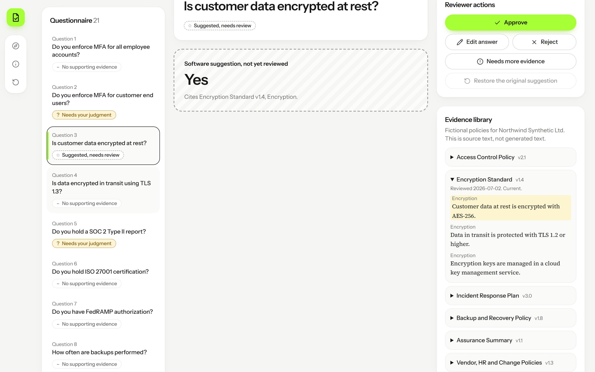
Select a title to jump to it. New to the demo? Read pages 3 to 5 first, then follow the feature pages in order; they follow the same path as a real review.
Before you start → Launch → Your first review → Read a software suggestion → Check the cited evidence → Approve a suggestion → Export. Everything else is reference.
This demo has no accounts, sign-in or API keys. What you need depends on how you open it.
What it is: a web browser (the demo was tested in Chromium only) and the demo running at http://localhost:3100/.
Where you get it: the project folder secq-demo, started with the steps on the next page.
Where you use it: in the browser address bar.
What it is: Node.js with npm (the project was built with Node 24).
Where you get it: nodejs.org, or your organisation’s software portal.
Where you use it: in a terminal opened in the secq-demo folder.
What it is: the Python prototype secq-poc with its virtual environment.
Where you use it: npm run data. Normal use does not need it, because the generated data is already in the project.
No workspace login, no model-provider key, no integration token, no cloud account and no payment. The demo makes no external calls and uses no AI service. Never put real company files or secrets into it.
Where: a terminal in the secq-demo folder, then your browser. Purpose: get the demo running on your own computer.
npm install npm run build npm run serve # the terminal prints: http://localhost:3100
Run the three commands in order. Leave the terminal open while you use the demo. For development, npm run dev serves the same address.
The terminal prints the address, and opening it in your browser shows the welcome screen with the headline “Security questionnaires answered from your approved policies”.
Open a terminal in the secq-demo folder and run npm install once. Then run npm run build.
Run npm run serve. It starts a small local web server on port 3100.
Open http://localhost:3100/ in your browser and select “Start the interactive demo”.
If the address does not open, see Troubleshooting. Nothing here costs money or sends data off your computer.
Open this part of the appWorks while the app is running locally.
Goal: approve two answers and download an Excel file that contains only those two. About four minutes. Cost: none.
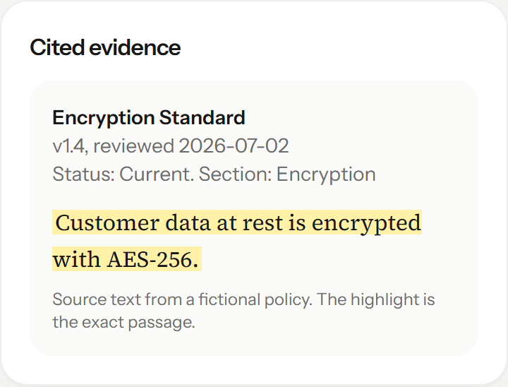
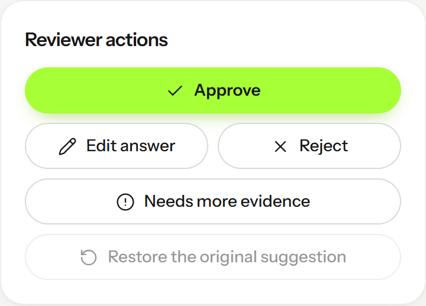
Left: the evidence for Question 3, with the exact sentence highlighted. Right: the reviewer actions, where you select Approve.
“Export Excel (2 approved)” is enabled and the downloaded workbook has an answer in the Response column for exactly those two questions. Every other row is blank.
Select “Start the interactive demo”, then Question 3. Check that the highlighted evidence says customer data at rest is encrypted with AES-256, then select “Approve”.
Select Question 9, “Do you test restores from backups?”. Check its cited passage, then select “Approve”.
Select “Export Excel (2 approved)”, then open the downloaded file and confirm only those two rows have answers and a “Source:” line.
Common mistakes: approving without reading the passage; expecting answers for every question (most have none by design); looking for the file before the browser finished downloading.
Open this part of the appWorks while the app is running locally.
Where: First page you see when the app opens. Purpose: Explains what the demo is and lets you try the key idea (a suggestion is not an answer until a person approves it) before you open the questionnaire.
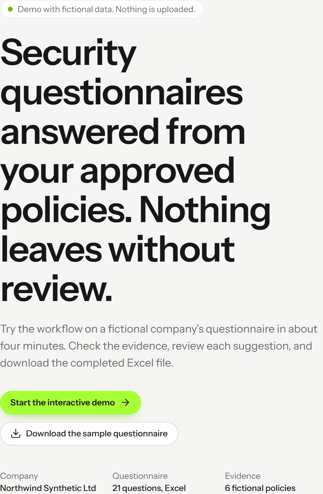
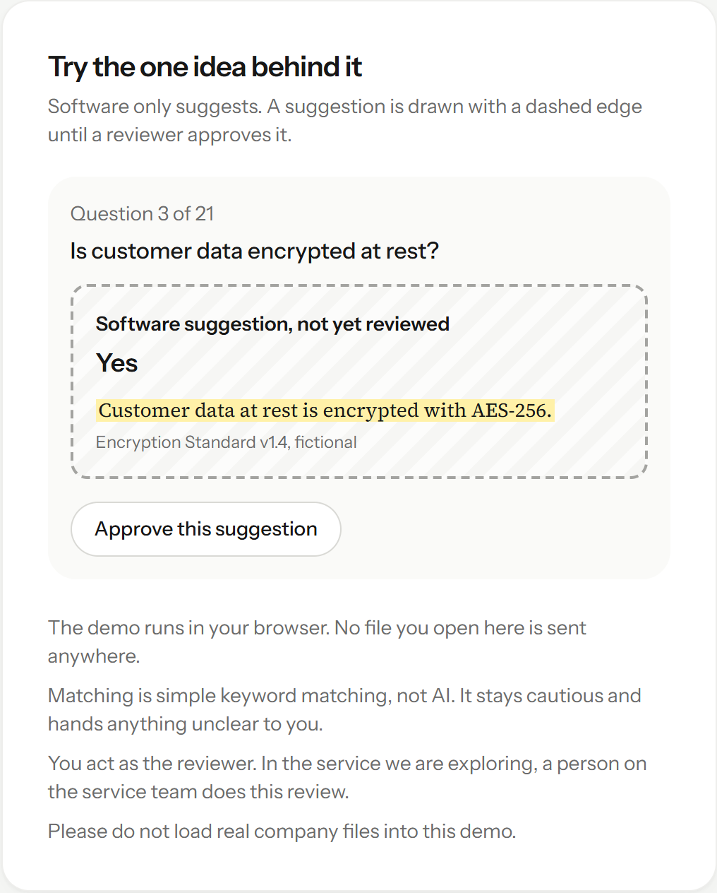
Left: the headline and the two buttons. Right: a small interactive example, not part of your questionnaire.
The headline reads “Security questionnaires answered from your approved policies”, and the example card shows a dashed “Software suggestion, not yet reviewed” box.
Read the notes under the example card: the demo runs in your browser, matching is keyword matching and not AI, you act as the reviewer, and real company files must not be loaded.
Select “Approve this suggestion” in the example card. The dashed box turns into a solid green-edged “Approved by the reviewer” box. Select “Undo approval” to return.
Select “Start the interactive demo” to open the questionnaire. “Download the sample questionnaire” saves the fictional Excel file.
Cost: none. Nothing is uploaded; the sample file is served from the same place as the app.
Open this part of the appWorks while the app is running locally at http://localhost:3100/
Where: Workspace, left column “Questionnaire”. Purpose: Shows all 21 questions of the sample workbook with a status for each, so you can see what needs a person.
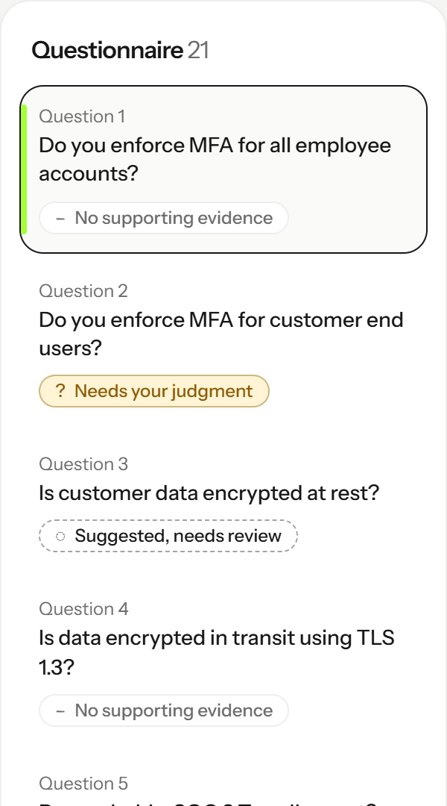
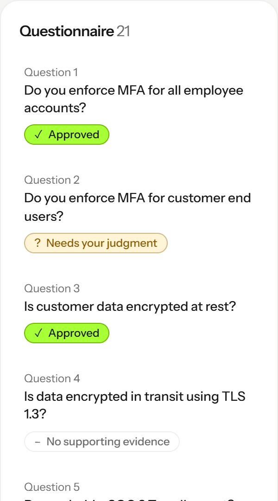
Left: the first questions before any review. Right: the same rows after reviewing. A selected row has a dark border and a lime bar; each row shows a written status.
The row you chose is outlined and the centre and right columns show that question. Statuses are always written out, never colour only.
Select any question. You can also focus the list and press the Down and Up arrow keys, Home or End to move between questions.
Read the status chip. “Suggested, needs review” means the software drafted an answer. “Needs your judgment” and “No supporting evidence” mean it drafted nothing.
Work through the list in any order. Your choices are kept for the rest of this browser tab session.
In the sample, 5 questions have a suggestion, 2 need your judgment and 14 have no supporting evidence. This is deliberate and shows the matcher’s limits.
Open this part of the appWorks while the app is running locally at http://localhost:3100/
Where: Workspace, centre column, above the question. Purpose: Counts how many answers you have approved, how many are still waiting, and how many you have held back.
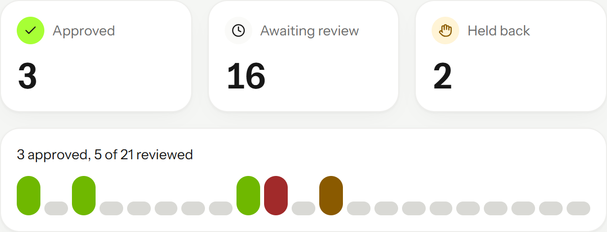
Progress after approving three answers, rejecting one and holding one. The strip shows one tick per question.
“Approved” goes up when you approve, “Held back” counts rejected and needs-more-evidence items, and the sentence below reads “N approved, M of 21 reviewed”.
Approve, reject or hold a question (see the next pages).
Watch the three tiles update. “Awaiting review” is everything not yet approved, rejected or held back.
Use the tick strip as a quick map: green ticks are approved, red are rejected, amber are held back, grey are untouched.
The numbers describe this session only. They are not metrics from a real customer.
Open this part of the appWorks while the app is running locally at http://localhost:3100/
Where: Workspace, centre column, the large answer box. Purpose: Shows what the software proposes and, just as important, that nobody has reviewed it yet.
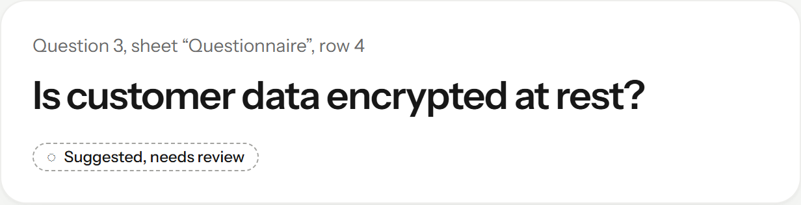
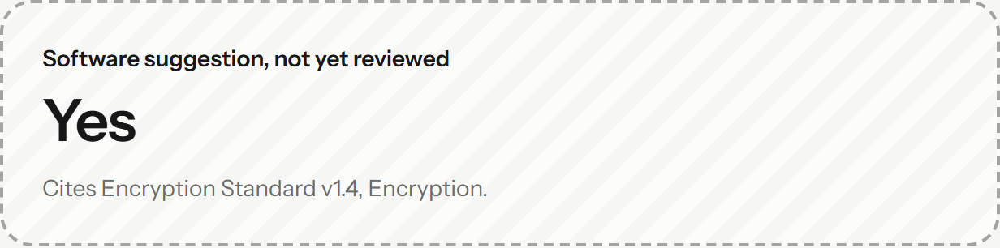
Question 3. The dashed, hatched edge means “software suggestion, not yet reviewed”. The line under the answer names the policy it cites.
You see an answer such as “Yes”, the title “Software suggestion, not yet reviewed”, and “Cites Encryption Standard v1.4, Encryption.”
Select Question 3, “Is customer data encrypted at rest?”.
Read the answer and the citation line. The suggestion exists only because a policy passage matched the question.
Do not treat it as final. The next pages show how to check the passage and approve it.
The suggestion is software output from keyword matching. It is not AI and has not been reviewed by an expert.
Open this part of the appWorks while the app is running locally at http://localhost:3100/
Where: Workspace, centre column, above the answer box. Purpose: Explains why some questions have no suggested answer, so a gap is never filled with an invented control.
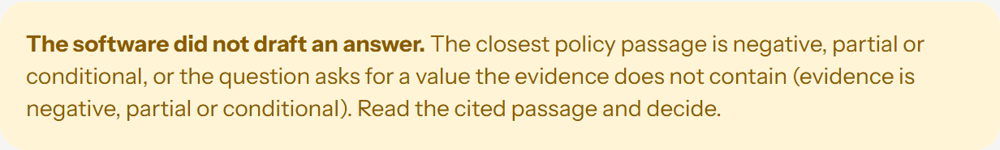
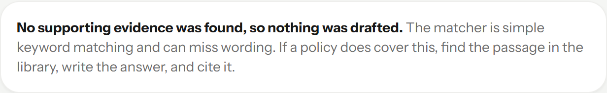
Top: Question 2 has a closest passage that is negative, partial or conditional. Bottom: Question 1 has no matching passage.
The answer box reads “No suggested answer” and “Nothing to approve yet.”, and the Approve button is disabled.
Select Question 1 or Question 2.
Read the note. “Needs your judgment” points you to the closest passage in Cited evidence. “No supporting evidence” means the matcher found nothing and may have missed different wording.
If a policy does cover it, write the answer yourself (see “Edit and cite your own answer”).
This is intentional: the demo prefers a blank to a guess.
Open this part of the appWorks while the app is running locally at http://localhost:3100/
Where: Workspace, right column, “Cited evidence”. Purpose: Shows the exact policy passage behind a suggestion, with the document name, version, review date and status.
Evidence for Question 3. The yellow highlight is the exact source sentence, set in a serif face to mark it as source text.
A card names the document (for example Encryption Standard, v1.4), its status and section, and highlights the passage.
Select a question that has a suggestion, such as Question 3.
Read the highlighted sentence and compare it with the question. Check the version and the “Status” line.
If the passage does not really answer the question, do not approve. Reject it or mark it as needing more evidence.
All documents are fictional. Source text is shown as written; generated text is never mixed into it.
Open this part of the appWorks while the app is running locally at http://localhost:3100/
Where: Workspace, right column, “Evidence library”. Purpose: Lists all six fictional policies and their passages so you can find support that the matcher missed.
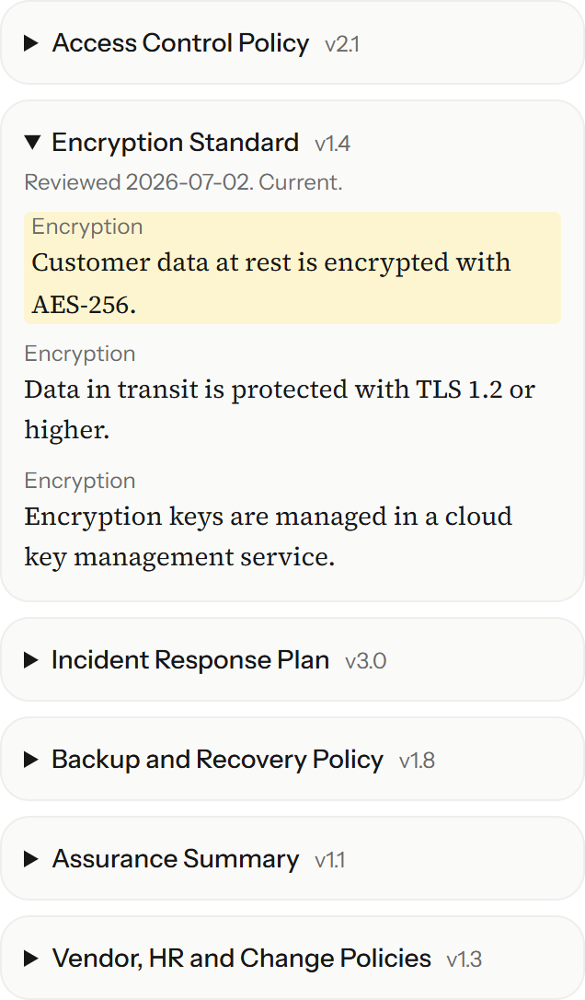
The library with the Encryption Standard open. The passage cited by the current question has a yellow background.
Each policy opens to show its version, review date, status and numbered passages. The document that is cited stays open.
Select a policy name to expand it.
Read its passages. They are fixed source text and cannot be edited in the demo.
When you find a passage that answers a question the software missed, note its wording and use it in “Edit and cite your own answer”.
The library holds 6 documents with 18 passages in total. It is part of the build, not uploaded by you.
Open this part of the appWorks while the app is running locally at http://localhost:3100/
Where: Workspace, right column, “Reviewer actions”. Purpose: Records that you checked the answer and its evidence. Only approved answers can be exported.
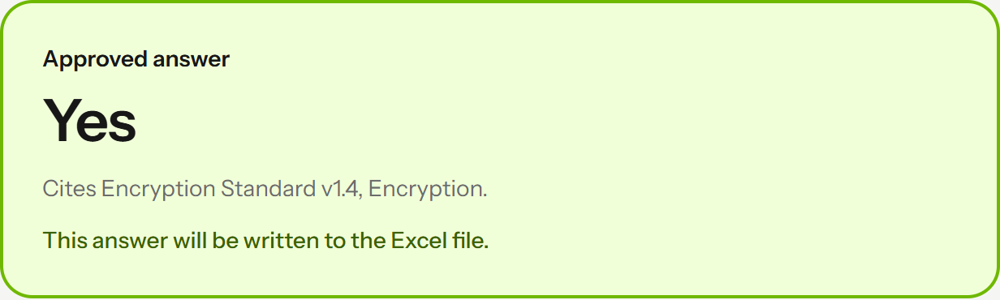
The reviewer actions, and the answer box after approval: solid green edge and the note that it will be written to the Excel file.
The title changes to “Approved answer”, the chip reads “Approved”, and “Export Excel (N approved)” counts it.
Select Question 3 and check its cited evidence.
Select “Approve”. The button is disabled when there is no answer, or when a dropdown question has a value outside Yes, No or N/A.
Select “Restore the original suggestion” if you want to undo your changes and return to the software’s first suggestion.
Approval is a person’s decision. In this demo that person is you; the demo does not claim any expert reviewed the answer.
Open this part of the appWorks while the app is running locally at http://localhost:3100/
Where: Workspace, right column, “Reviewer actions”. Purpose: Keeps weak or unsupported answers out of the export.
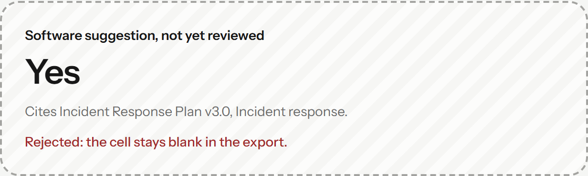
A rejected answer. The cell stays blank in the export.
The chip reads “Rejected, will not export” or “More evidence needed”, and the answer box says the cell stays blank.
Select a question whose evidence does not support the answer.
Select “Reject” to discard the suggestion, or “Needs more evidence” if you need a better policy passage first.
You can still change your mind: select “Approve” later, or edit the answer first.
Rejected and held answers are never exported.
Open this part of the appWorks while the app is running locally at http://localhost:3100/
Where: Reviewer actions, “Edit answer”. Purpose: Lets you answer a question the software missed, or correct a suggestion, and tie the answer to a policy passage.
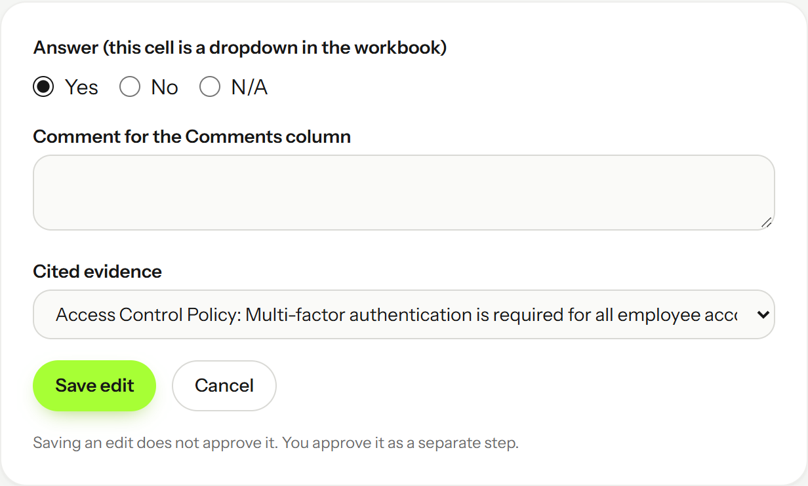
The edit form for a dropdown question. “Cited evidence” offers every passage in the library.
After “Save edit” the chip reads “Edited, needs approval” and the answer box is dashed again, titled “Your edit, waiting for your approval”.
Select “Edit answer”. Choose Yes, No or N/A (the workbook cell is a dropdown) and optionally type a comment.
Choose the supporting passage in “Cited evidence”. Choosing “No evidence cited” is allowed but is recorded as such.
Select “Save edit”, then select “Approve” as a separate step.
Every edit withdraws an earlier approval. If you approve with no cited passage, the export says “Source: none cited; answer entered by the reviewer.”
Open this part of the appWorks while the app is running locally at http://localhost:3100/
Where: Header, top right: “Export Excel (N approved)”. Purpose: Writes only approved answers into a copy of the sample workbook and keeps its formatting.
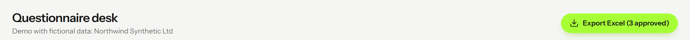
| ID | Question | Response | Comments / Evidence |
|---|---|---|---|
| Q1 | Do you enforce MFA for all employee accounts? | ||
| Q2 | Do you enforce MFA for customer end users? | ||
| Q3 | Is customer data encrypted at rest? | Yes | Source: Encryption Standard v1.4, Encryption: "Customer data at rest is encrypted with AES-256." |
| Q9 | Do you test restores from backups? | Yes | Source: Backup and Recovery Policy v1.8, Backup and recovery: "Restore tests are performed quarterly." |
Top: the export button. Below: the first rows of a real exported file in which only Question 3 and Question 9 were approved.
A file named Northwind-Security-Questionnaire-reviewed.xlsx downloads. Approved rows have an answer and a “Source:” line in the comments column; every other row is blank.
Approve at least one answer. The button is disabled while the count is 0.
Select “Export Excel (N approved)”. Your browser saves the file; nothing is sent anywhere.
Open the file in Excel and check the Response and Comments columns against what you approved.
Sheet order, hidden sheets, widths, heights, merges, basic formatting, dropdowns, conditional formatting and freeze panes were checked on the sample only. Images, charts and macros are not supported.
Open this part of the appWorks while the app is running locally at http://localhost:3100/
Where: Left sidebar, compass icon “Guided tour” (on phones: the “Guided tour” button in the header). Purpose: A five-step walkthrough that moves to the right place and outlines each area.
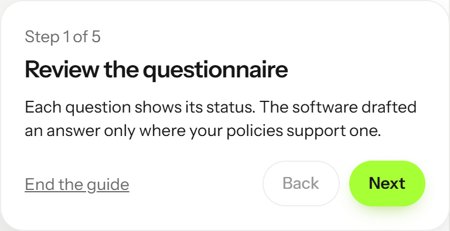
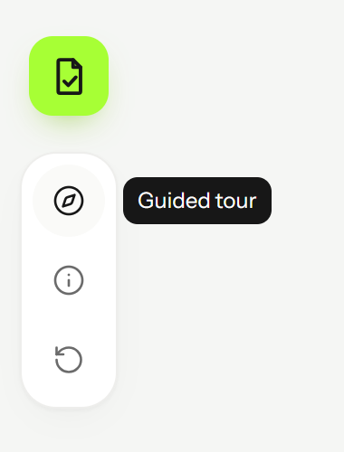
Left: the tour card, which stays out of your way at the bottom right. Right: the sidebar tools with their tooltip.
A card titled “Review the questionnaire” appears, “Step 1 of 5”, and the question list is outlined.
Select “Guided tour”.
Use “Next” and “Back”. The steps cover the list, the evidence, a suggestion, the actions and the export button.
Select “Finish” on step 5, or “End the guide” (or press Escape) at any time.
From step 2 the tour opens Question 3 for you. It does not reset your review choices.
Open this part of the appWorks while the app is running locally at http://localhost:3100/
Where: Left sidebar, info icon “Limits” (on phones: the “Limits” button). Purpose: States the export support list, the matching method and the data handling in one place.
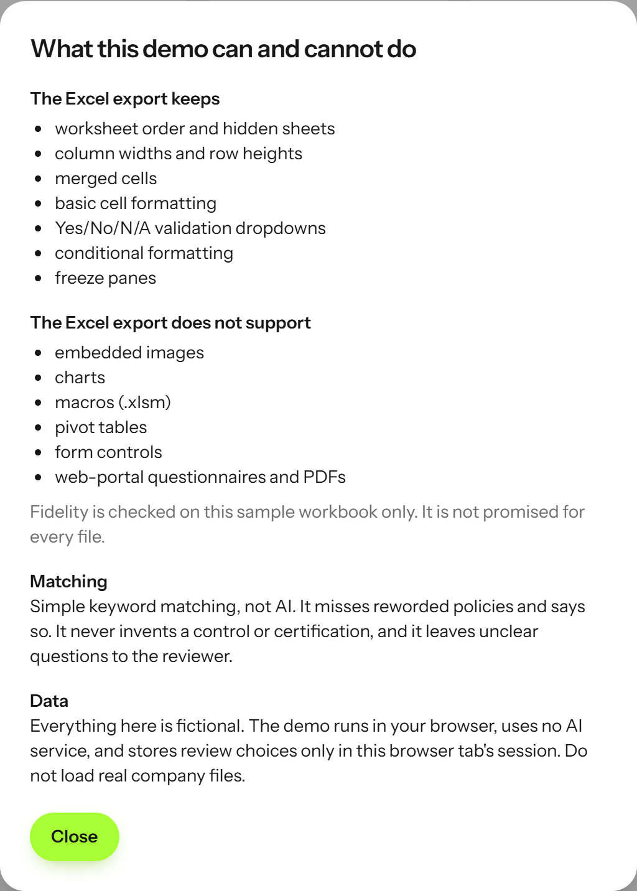
The top of the Limits dialog. It continues with the unsupported list, matching and data notes.
A dialog titled “What this demo can and cannot do” opens and focus moves into it.
Select “Limits”.
Read “The Excel export keeps” and “The Excel export does not support”.
Select “Close”, press Escape, or select outside the dialog.
Fidelity is checked on the sample workbook only, not promised for every file.
Open this part of the appWorks while the app is running locally at http://localhost:3100/
Where: Any screen narrower than a laptop. Purpose: The three columns become three tabs so each screen stays readable.
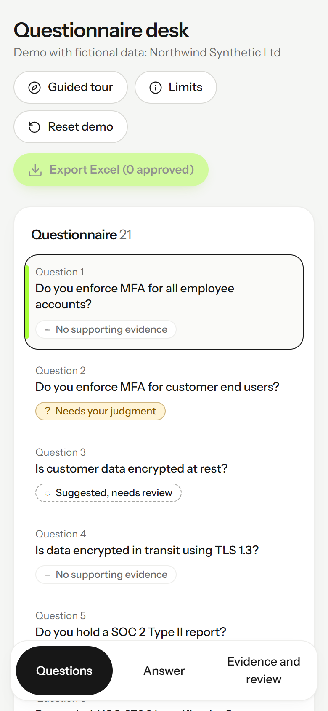
A 390 pixel wide screen. The tabs along the bottom switch between Questions, Answer, and Evidence and review.
A pill-shaped tab bar sits at the bottom and “Guided tour”, “Limits” and “Reset demo” appear as labelled buttons under the title.
Select a question. The app switches to the Answer tab.
Select the “Evidence and review” tab to see cited evidence and the reviewer actions.
Select “Export Excel (N approved)” in the header when you are done.
There is no horizontal scrolling at phone width. Tested at 390 pixels wide in an automated browser, not on physical devices.
Open this part of the appWorks while the app is running locally at http://localhost:3100/
Where: Left sidebar, circular-arrow icon “Reset demo”. Purpose: Clears every approval, rejection, edit and hold so you can run the demo again.
The three sidebar tools: Guided tour, Limits and Reset demo. The tooltip names a tool when you point at it.
A short message says “Demo reset. All review choices were cleared.” and all counts return to 0 approved, 21 awaiting review.
Select “Reset demo”.
Check that “Export Excel (0 approved)” is disabled again.
To start fully fresh, close the browser tab. Choices are kept only in that tab’s session storage.
Review choices are not saved on a server and are not shared between tabs or devices.
Open this part of the appWorks while the app is running locally at http://localhost:3100/
Where: a terminal in the secq-demo folder. Purpose: prove the demo still behaves as described. There is no graphical interface for this; these are commands.
npm run test:unit # matcher parity with the Python engine, review rules,
# export + fidelity check
npm run test:e2e # browser tests, desktop and mobile
npm run data # rebuild src/data from secq-poc (needs its venv)
The unit tests compare every suggestion with the Python prototype’s saved results and run the prototype’s fidelity checker on an exported workbook. The browser tests use an already-installed Chromium; set CHROMIUM_PATH to use another.
Vitest lists 35 passing tests. Playwright lists passing desktop and mobile tests; three desktop-only tests are skipped by design on mobile.
Run npm run build, then npm run test:unit.
Run npm run test:e2e. The test configuration starts the static server for you.
Only if the policies or sample workbook change, run npm run data and rebuild.
Last run before this guide was published: 35 unit tests and 23 browser tests passed, with 3 browser tests skipped by design. The suite also checks that sidebar tooltips are not covered by page content.
Where: a build-time setting. Purpose: let a developer test the importer with their own fictional .xlsx. The default and public build has no upload control.
# PowerShell, local testing only, fictional files only $env:NEXT_PUBLIC_ALLOW_UPLOAD = "1" npm run build npm run serve
With the setting, a file chooser appears under the title in the workspace. Without it, no file chooser exists (an automated test checks this).
“Local testing only, fictional files only:” followed by a file chooser. Loading a workbook shows a message “Loaded <file name> for local testing.”
Set the variable and rebuild. The setting is read at build time, so a running app will not pick it up.
Choose a fictional .xlsx whose header row contains a question column and a response or answer column.
Run npm run build again without the variable before sharing the build with anyone.
Limit: never load a real customer questionnaire. Real-file handling has not been reviewed or approved. Uploaded workbooks are matched against the same six fictional policies only.
Find the symptom, check the likely cause, then apply the fix.
| Symptom | Likely cause | What to do |
|---|---|---|
| The address does not open | The server is not running, or port 3100 is in use. | Run npm run build, then npm run serve, and keep that terminal open. Set the PORT environment variable to pick another port. |
| “Start the interactive demo” shows an error | The sample file could not be fetched. | Check that public/sample/Northwind-Security-Questionnaire.xlsx exists in the build (out/sample) and rebuild. |
| Approve is disabled | There is no answer yet, or the answer is not Yes, No or N/A for a dropdown question. | Select “Edit answer”, choose a value, save, then approve. |
| “Export Excel (0 approved)” is disabled | Nothing is approved. Edited, rejected and held answers do not count. | Approve at least one answer. |
| An approved answer disappeared from the count | You edited it. Every edit withdraws approval. | Select “Approve” again after saving. |
| The export has an unexpected “none cited” line | The approved answer cites no policy passage. | Edit the answer, choose a passage in “Cited evidence”, save and approve again. |
| Choices vanished | You pressed “Reset demo” or closed the tab. Choices live in that tab’s session storage only. | Redo the review. There is no server copy. |
| Tests cannot launch a browser | The Playwright browser revision does not match the installed one. | Set CHROMIUM_PATH to an installed Chromium, or install the matching browser with your approval. |
| There is no sign-in, permission or integration to fix | The demo has none. If you expected them, you may be thinking of the full product, which does not exist yet. | Nothing to configure. |
Check these before you show the demo to anyone.
http://localhost:3100/ (local only)